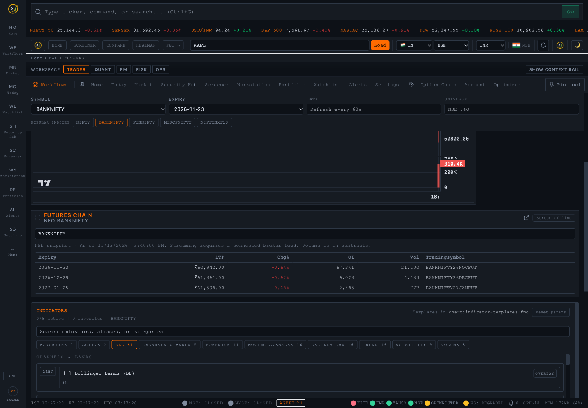
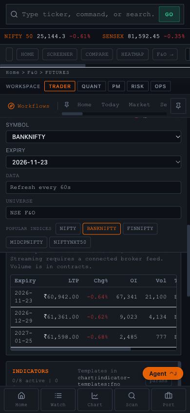
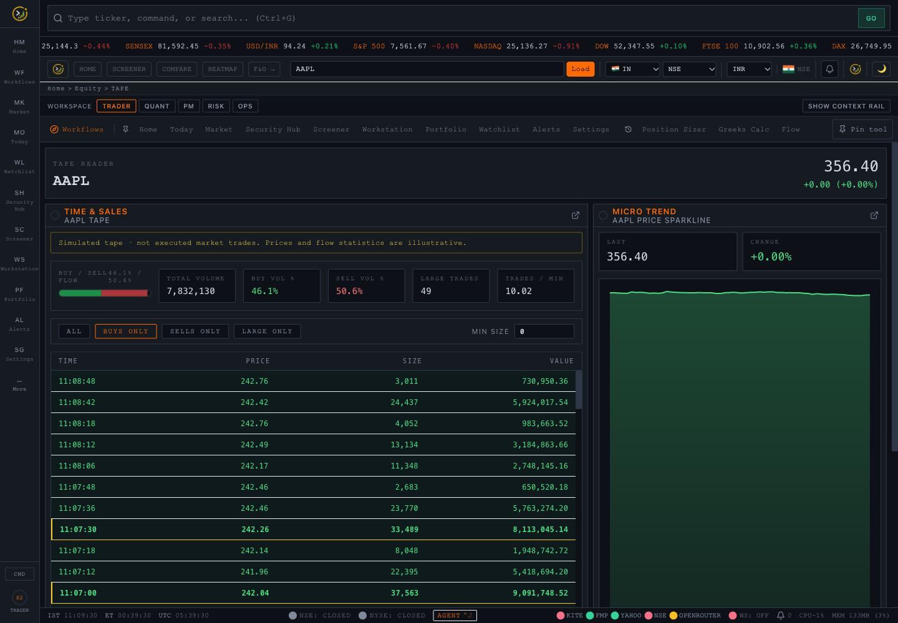
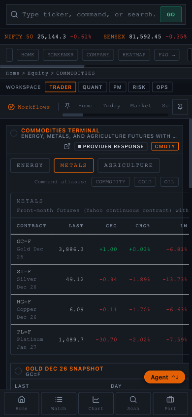
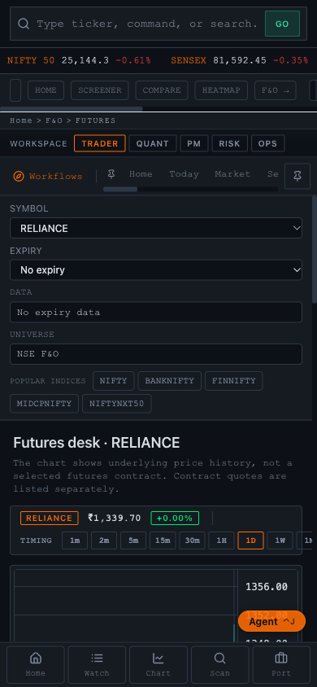
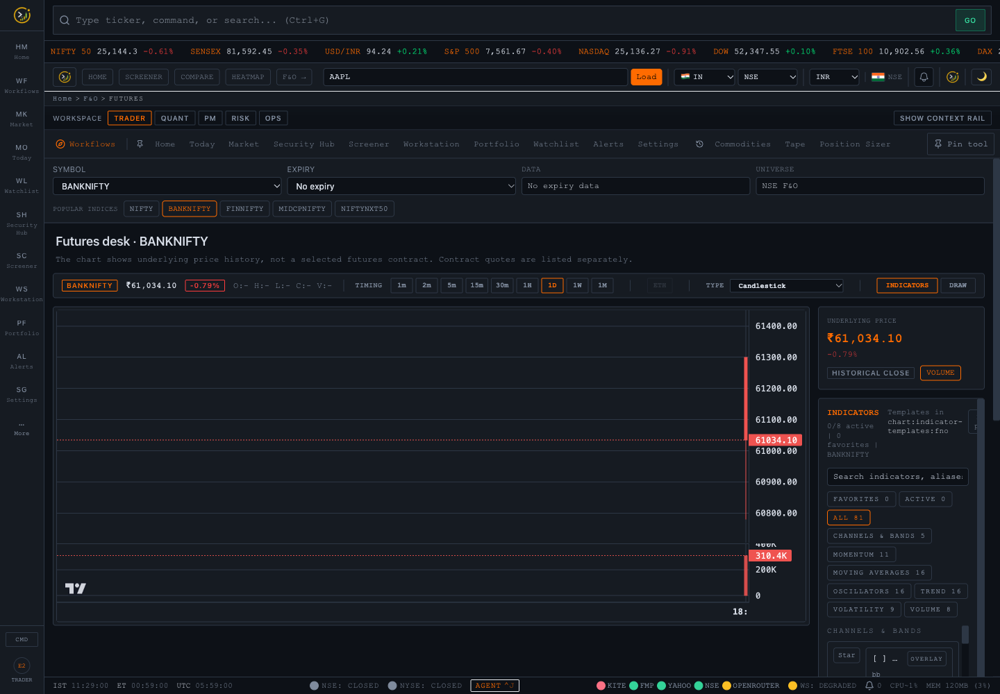
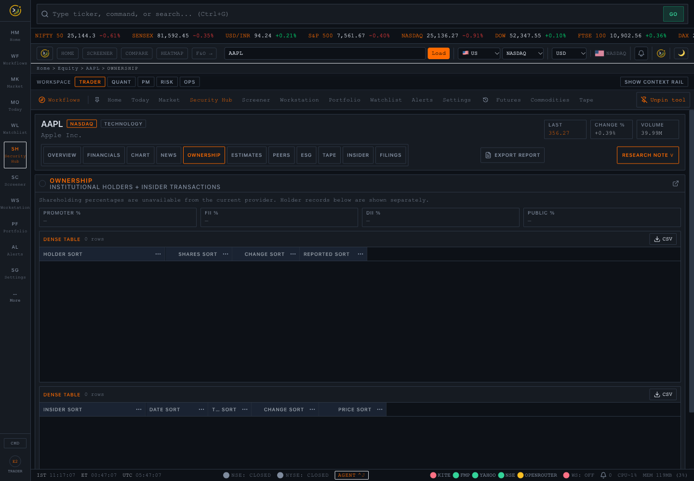

84 terminal route entries checked after page data settled. Selected functional checks and security fixes are documented in the audit report. Empty provider states are not live-data passes. The follow-up fixed the remaining npm advisories and NSE data paths and rotated the exposed provider credential. Read the final remediation results.






